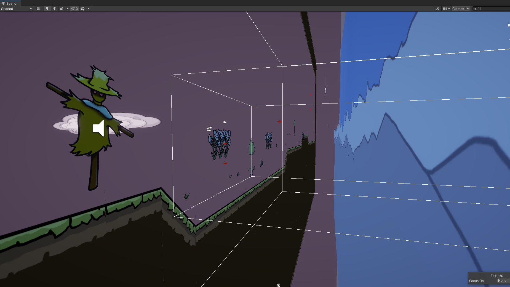
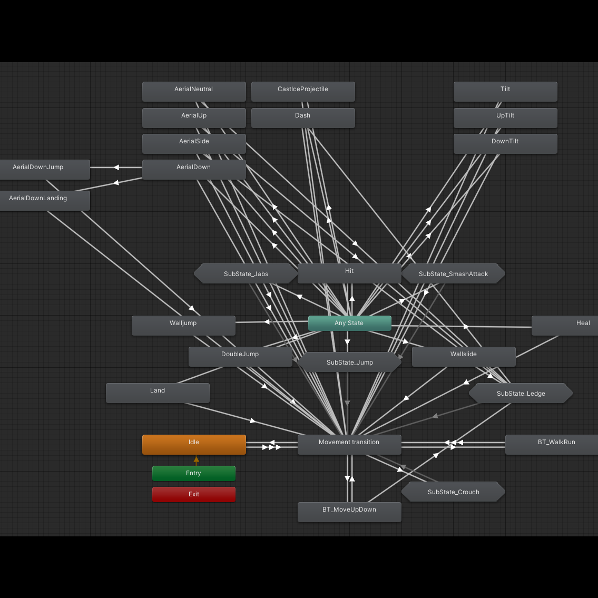
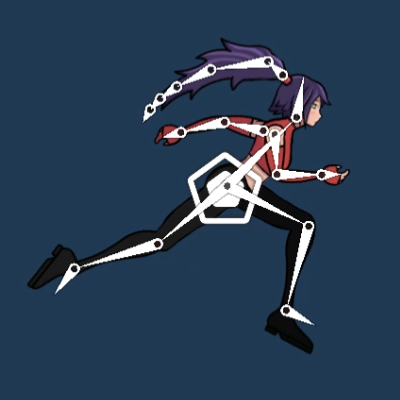
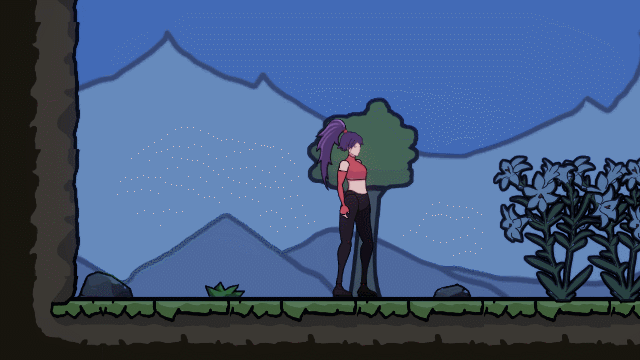
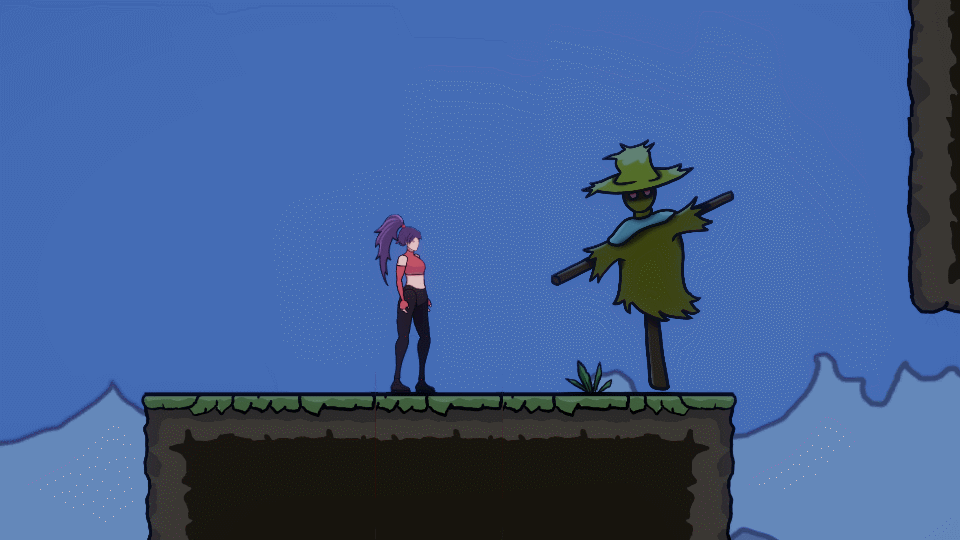
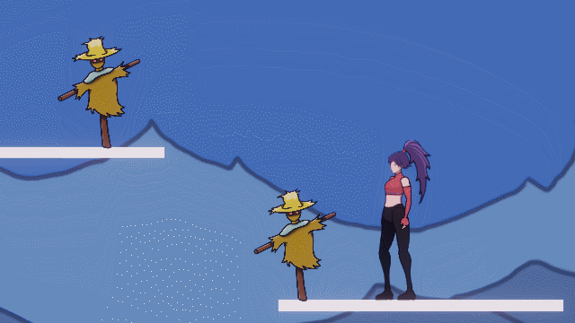
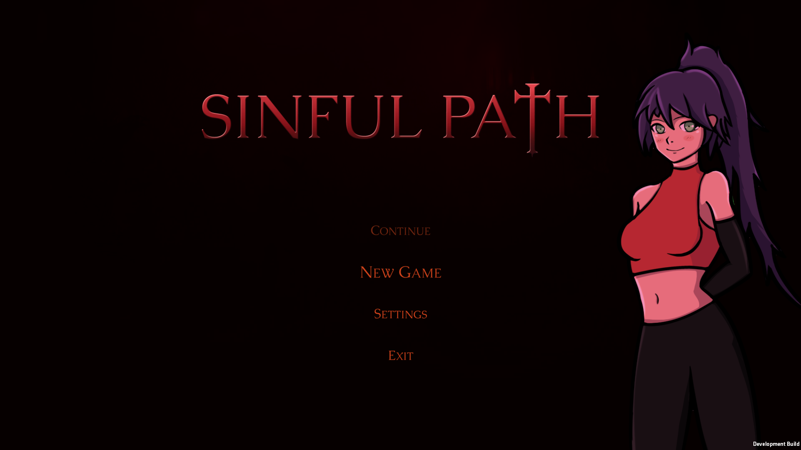
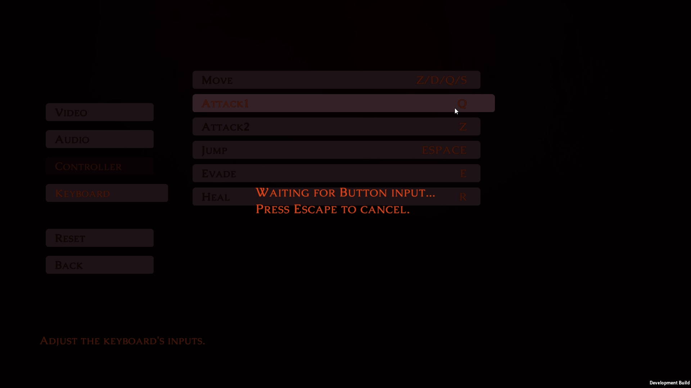
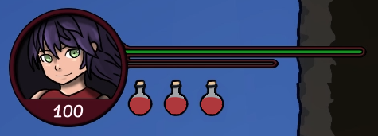

Portfolio
Sinful Path
I love the smash bros series and wanted to learn more about art, animations, audio, level design, UI/UX design etc.
So I developped this 2D platformer using Smash's fightning system.
So I developped this 2D platformer using Smash's fightning system.
Tools
Unity | Krita
For things I was not really familiar with (e.g. VFX) I used to watch and learn from the Game Developers Conference (GDC).
Work
Level creation workflow
- Using Unity's rule tiles to block out the level
- Place prefabs of enemies, interactables and environment
Parallax is handled by a custom script who uses the placement on the Z axis of the objects.

Player
- More than 10 attacks, combos and projectiles
- Jump, walljump, wallslide, heal, dash...
- Controller and keyboard support
- Skeletal animation
- Input buffer





Main menu
- Start the game
- Customize your settings


Graphics
- Assets used can be found HERE
- Playing with post-processing effects and Unity's 2D lights

Music & HUD
- Audio scripts for smooth music transition and managing SFX
- Dialogue scripts
- Health and mana bar with a potion system
